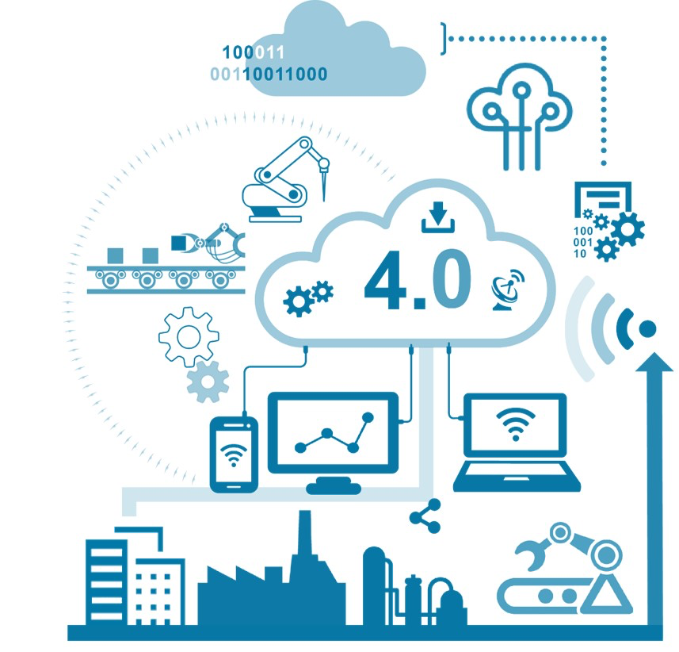
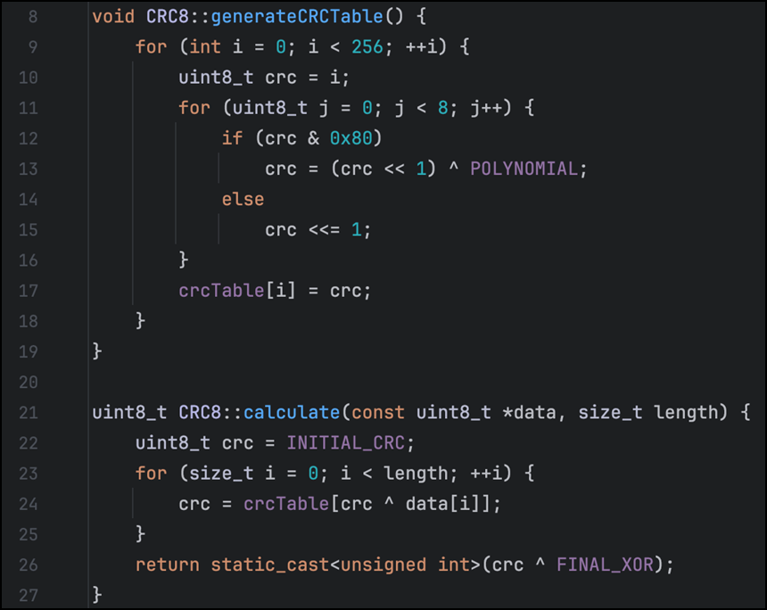
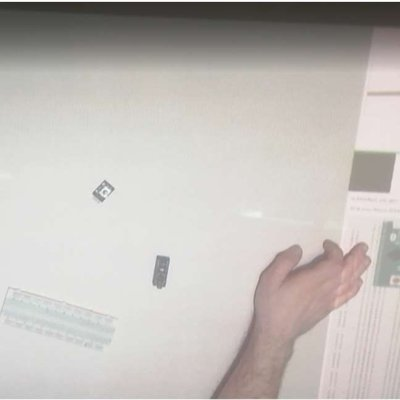
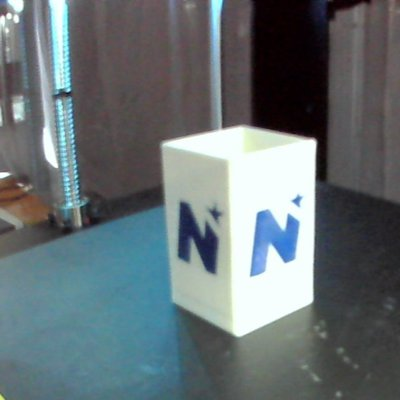

Masterarbeit: Dezentrale IIoT-Architektur
Technologische Konzeption eines IoT/IIoT-Systems zur skalierbaren Überwachung und Analyse dezentralisierter Daten. Entwicklung einer verteilten Edge-Computing Architektur mit hybrider Datenverarbeitung (Neo4j, InfluxDB, NATS).
Zur Masterarbeit
Analyse dezentraler Edge-Computing-Systeme
Evaluierung von Docker, Podman, Kubernetes, K3s und Docker Swarm für ressourcenbeschränkte Edge-Devices in industriellen Industrie 4.0-Umgebungen.
Zum Projekt
SC2SC – Sensor Connection to Siemens Controller
Entwicklung einer performanten TCP/IP-Datenschnittstelle zwischen einer Siemens S7 SPS und ESP32-Mikrocontrollern inkl. CRC-Fehlererkennung und Handshake-Protokoll.
Zum Projekt
Projektionsbasiertes Werkerassistenzsystem mit Computer Vision
Ein Kamera-Projektor-System für das Industrie 4.0 Lab der FH St. Pölten, das Anwender*innen Schritt für Schritt durch eine Baugruppenmontage führt – mit Objekterkennung, Gestensteuerung und optischem Feedback direkt auf der Arbeitsfläche.
Mehr erfahren
Fehlererkennung im FDM-3D-Druck mit Tiefenkamera
Ein prototypisches Computer-Vision-Konzept, das Farb- und Tiefeninformationen einer Intel RealSense D435 mit dem neuronalen Netz „Segment Anything“ kombiniert, um 3D-Druckobjekte zu segmentieren, zu vermessen und Abweichungen zu erkennen.
Mehr erfahren